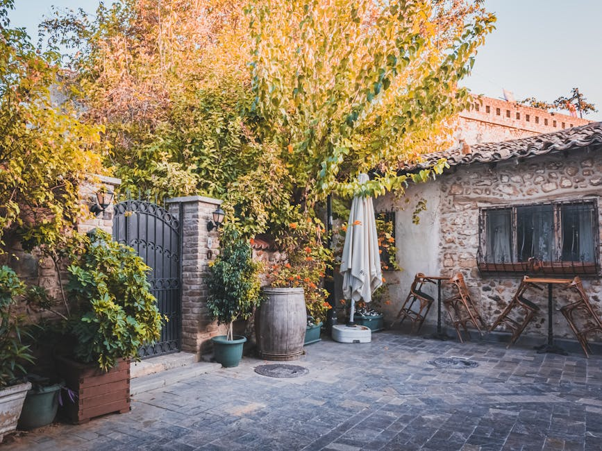

Ökoloogiline läbilaskev tänavakivi: sademevee imbumine 2026
Läbilaskev tänavakivi (permeable paver) laseb sademeveel imbuda läbi katendi otse pinnasesse, vähendades sademeveetorustiku koormust 60–90% ja aidates eramaja omanikul vältida KOV-i sademeveetasusid. 2026. aastal nõuab üha enam Eesti omavalitsusi uutel kruntidel kohapealset vihmavee käitlust — ja läbilaskev katend on selle kõige odavam viis.
Mis on läbilaskev tänavakivi ja kuidas see toimib?
Läbilaskev katend (permeable interlocking concrete pavement, PICP) erineb tavalisest tänavakivi paigaldusest kolme võtmedetaili poolest: vuukide laius (10–15 mm tavalise 3–5 mm asemel), vuugitäide (peen killustik 2/5 mm liiva asemel) ja aluskihtide ülesehitus (avatud graderingiga killustik 4/8 ja 16/32, mitte tihendatud purustatud kruus). Sademevesi liigub vuukidest aluskihti, kogub end sinna ajutiselt kogumismahuks ja imbub seejärel pinnasesse või juhitakse drenaažitoruga ära.
Eesti kliimas — kus aastane sademete hulk on 600–750 mm ja kasvab 2030. aastaks IPCC stsenaariumide järgi ca 10% — on traditsiooniline lahendus (vesi kogutakse rennidesse ja juhitakse KOV-i süsteemi) muutumas üha kallimaks. Tallinn, Tartu ja Pärnu kehtestasid 2024–2025 sademeveetasud, mis suuremale eramajale (300 m² katust + 200 m² kõvakatet) tähendavad 80–180 €/aastas. Läbilaskev katend kustutab selle kulu sissesõiduteelt täielikult.
Standardid ja tehnilised nõuded
Eestis kohaldatavad standardid on EVS-EN 1338 (betoonist sillutuskivid), EVS-EN 1342 (looduskivist sillutuskivid) ja EVS 901-3 (sillutuse paigaldamise juhend). PICP-katendi konkreetset Eesti standardit ei eksisteeri, kuid Maanteeameti juhend "Sademevee käitlus" (2022) tunnustab läbilaskvat katendit kui esmast hajutusmeetmete (LID — Low Impact Development) lahendust.
Millal valida läbilaskev katend (ja millal mitte)
Läbilaskev katend on õige valik, kui sinu krunt vastab vähemalt kolmele tingimusele: kallak alla 5%, pinnas läbilaskvusega üle 13 mm/h (liiv, kruusliiv, kerge moreen), põhjavee tase üle 1 m sügavusel ja KOV nõuab kohapealset vihmavee käitlust. Kui pinnas on tugevasti savine (imbumiskiirus alla 5 mm/h), saab süsteemi siiski rajada drenaažitoruga, kuid hind tõuseb 25–40%.
| Parameeter | Läbilaskev katend (PICP) | Traditsiooniline katend |
|---|---|---|
| Vuukide laius | 10–15 mm | 3–5 mm |
| Vuugitäide | Peenkillustik 2/5 mm | Vuugiliiv 0/2 mm |
| Aluskihi paksus | 35–55 cm | 20–30 cm |
| Imbumiskiirus | 270–10 000 mm/h | 0 mm/h (vesi voolab maha) |
| Sademeveetasu eramajal | 0 €/aastas (vabastatud) | 80–180 €/aastas |
| Eluiga | 25–40 aastat | 20–35 aastat |
| Paigaldushind (betoonkivi) | 55–85 €/m² | 40–65 €/m² |
| Hooldus | Vuukide tühjendamine iga 2–4 aasta järel | Vuukide täitmine iga 4–6 aasta järel |
Olukorrad, kus läbilaskev katend EI sobi: ehituslike õlivalgumiste piirkonnad (tanklad, autoteenindused — lubatud ainult koos õliseparaatoriga), tugevasti soolatatavad alad (raskel talvel 5+ soolakorda kahjustab vuugitäidet), kallak üle 5% ilma terrassitamiseta ja piirkonnad, kus põhjavesi on alla 1 m sügavusel.
KOV nõuded ja sademeveetasud Eesti suuremates linnades
2024–2026 perioodis on enamik Eesti suuremaid omavalitsusi kehtestanud või tugevdanud sademevee käitluse nõudeid. Praktiline mõju eramaja omanikule: kui sinu krunt on uus arendus või sa renoveerid kõvakatet üle 50 m², võid olla kohustatud tõestama, et sademevesi käideldakse kohapeal.
| Linn | Tasu indikatiivne (eramaja, 500 m² kõvakate) | PICP kohustuslik? |
|---|---|---|
| Tallinn | 120–180 €/aastas | Soovituslik uutel kruntidel |
| Tartu | 90–140 €/aastas | Nõutav kesklinna piirkonnas |
| Pärnu | 80–130 €/aastas | Soovituslik rannarajoonis |
| Viljandi | 60–100 €/aastas | Vabatahtlik |
| Narva | 70–120 €/aastas | Vabatahtlik |
| Rakvere | 50–90 €/aastas | Vabatahtlik |
Konkreetsed lahendused linnade kaupa leiad meie piirkondlikest juhenditest: Tallinnas, Tartus või Pärnus. Kortermajadel ja ühistutel on eraldi reeglid — vt kortermaja hooviala renoveerimise juhendit.
Sobivad tooted: betoonkivi, graniit ja murukivi
Eestis on saadaval kolm peamist läbilaskva katendi toodet, igaüks omaette kasutusalaga.
Betoonist PICP-kivid (Brikers, Aroc, Premia)
Hind paigaldatuna: 55–85 €/m². Kvaliteetsete betoonkividega (Brikers Permea, Aroc Aqua, Premia EcoBlock) on saavutatav imbumiskiirus 1 000–4 000 mm/h. Sobib eramaja sissesõiduteele, parklatesse kuni keskmise koormusega (autod kuni 3,5 t), terrasside ümber ja kõnniteedele. See on kõige levinum lahendus tänu hinnale ja paigalduslihtsusele.
Looduskivi (graniidist) PICP
Hind paigaldatuna: 95–140 €/m². Soome, India ja Hiina graniidist sillutuskivid laiendatud vuukidega. Eluiga 40+ aastat, kuid hind on 60–80% kõrgem kui betoonil. Eelistatuim valik esindusobjektidel ja vanalinna miljöös, vt graniit vs betoonkivi võrdlust.
Murukivi (gravel-grid / grass paver)
Hind paigaldatuna: 30–55 €/m². Avatud silmusega betoonelement, mille avadesse istutatakse muru või kruus. Imbumine kuni 10 000 mm/h. Sobib aiateedele, harva kasutatavale parklale ja eraduurde, kus auto on max 2 korda päevas — vt murukivi parkla paigaldust. EI sobi igapäevasele sissesõiduteele (rehvid kulutavad muru maha 6–12 kuuga).
Paigaldusprotsess: mida tehakse teistmoodi?
Läbilaskva katendi paigaldus erineb tavakatendist eelkõige aluskihi ehitusest. Tavakatend kasutab tihendatud purustatud kruusa (0/32 või 0/45) — see on praktiliselt veevett pidav, mis on tava-tänavakivi puhul soovitav. PICP nõuab vastupidi: aluskiht peab olema avatud graderinguga (4/8 mm peenem kiht + 16/32 mm jämedam kiht), mis loob 30–40% tühimikku ja toimib vihmavee ajutise kogumismahuna.
Tüüpiline kihistus eramaja sissesõiduteele (kogu paksus 45–55 cm):
- Pinnase tihendus + filtri-geotekstiil (Typar SF 27 või samaväärne, et takistada pinnase migratsiooni)
- Alus killustik 16/32 mm — 25–35 cm, tihendatud kerge vibroplaadiga (mitte üle 1500 kg)
- Paigaldusvahe killustik 4/8 mm — 5 cm, tasandatud kuid mitte tihendatud
- PICP-kivid — 8–10 cm paksus, 10–15 mm vuugid
- Vuugitäide killustik 2/5 mm — pärast paigaldust harjatakse vuukidesse, mitte liiv
Üks 200 m² eramaja sissesõidutee võtab tavaliselt 4–6 tööpäeva (võrreldes tavakatendile 3–4 päevaga). Lisakulu tuleb peamiselt aluskihi sügavusest ja killustikust — vt täpsemat hinnakalkulaatorit.
Hooldus ja ummistuste vältimine
PICP-katendi peamine ohutegur on vuukide ummistumine peene mustaga (lehed, õietolm, kassasõnnik, asfaldikulumissaadus). Hoolduskava: kord kahe aasta jooksul vuukide tühjendamine survepesuri (max 80 bar) või spetsiaalse PICP-hooldusmasinaga. Vältida tuleb liivapuistamist talvel — kasuta selle asemel pesemiseks puhast killustikku 2/5 mm. Talvine sool on lubatud, kuid mitte üle 3–4 korra hooaja jooksul.
Maksumus ja kokkuhoid — pikaajaline arvutus
Kuigi PICP esmane investeering on 35–40% kõrgem kui tavakatendil, on 25-aastases perspektiivis kogumaksumus madalam. Näide 200 m² sissesõiduteel Tallinnas:
| Kulu | Tavakatend | PICP |
|---|---|---|
| Paigaldus 2026 | 10 000 € | 14 000 € |
| Sademeveetasu 25 a × 150 € | 3 750 € | 0 € |
| Vuukide hooldus 25 a | 800 € | 1 400 € |
| Üks osaline ümberpaigaldus | 1 500 € | 0 € (eluiga pikem) |
| Kokku 25 aasta jooksul | 16 050 € | 15 400 € |
Lisaks rahalisele võrdlusele tuleb arvestada keskkonnamõju: 200 m² PICP-katend imab keskmiselt 130 000 liitrit vihmavett aastas, vähendab linnatemperatuuri "kuumasaarte" efekti ja toidab põhjavett. Nendel kaalutlustel pakuvad mitmed KKK-d (KredEx, KIK) 2025–2026 perioodil keskkonnatoetusi 15–30% ulatuses paigaldusmaksumusest.
Korduma kippuvad küsimused
Kui kiiresti vesi imbub läbilaskvast katendist?
Kvaliteetne PICP-katend laseb läbi 270–10 000 mm/h sõltuvalt toote tüübist (betoon vs murukivi) ja vuugitäite seisukorrast. Võrdluseks: Eesti 50-aastase paduvihma intensiivsus on ca 110 mm/h — see tähendab, et isegi kõige nõrgem PICP on ületav 2,5-kordselt. Esimese 2–3 aasta jooksul on imbumiskiirus tippu, seejärel langeb ummistumise tõttu järk-järgult, kuid hoolduse korral säilib üle 50 mm/h kogu eluea jooksul.
Kas ma vabanen sademeveetasust, kui paigaldan PICP-katendi?
Enamuses Eesti omavalitsustes JAH — kui kogu krundi kõvakate on läbilaskev ja sademevesi imbub kohapeal. Tallinnas, Tartus ja Pärnus on vaja esitada KOV-i sademeveeosakonnale insenertehniline arvutus (imbumiskiirus + arvestuslik tippvihma maht), mille hind on tavaliselt 150–400 €. Pärast heakskiitu väljastab KOV vabastusotsuse 5–10 aastaks.
Kas PICP-katendit saab paigaldada savise pinnasega Eesti krundile?
Saab, kuid lahendus muutub kallimaks. Savise pinnase puhul (imbumiskiirus alla 5 mm/h) ei saa sademevett täielikult pinnasesse juhtida. Lahendus on paigaldada aluskihti drenaažitoru (D 110 mm), mis suunab ülejäägi vihmaveerennidesse või kogumiskaevu. See tõstab paigaldusmaksumust 25–40%. Lõplik mõju sademeveetasule on 70–85% vähenemine (mitte täielik vabastus).
Millised on garantiitingimused läbilaskvale katendile?
Pakume PICP-paigaldusele kuni 2-aastast garantiid materjali ja töö suhtes — sama mis tavakatendil. Kivide endi tootjagarantii (Brikers, Aroc, Premia) on tavaliselt 5–10 aastat värvipüsivusele ja külmakindlusele EVS-EN 1338 alusel. Garantiitingimuste säilitamiseks tuleb järgida hooldusjuhendit: vuukide tühjendamine iga 2–4 aasta järel, mitte ületada koormust 3,5 t/telg.
Kuidas käitub PICP-katend Eesti talvel?
Üllatuslikult hästi. Avatud vuugid ja aluskiht juhivad sulamisvee pinnasesse, mis tähendab vähem libedat jääd katendi pinnal. Külmakerge oht on minimaalne, sest aluskihis pole vett pidavat kihti, mis pakaseks. Talvine soolamine on lubatud, kuid mitte üle 3–4 korra hooaja jooksul — sool degradeerib vuugitäidet. Liiva puistamise asemel soovitame puhast killustikku 2/5 mm, mis täidab samal ajal kulunud vuuke.